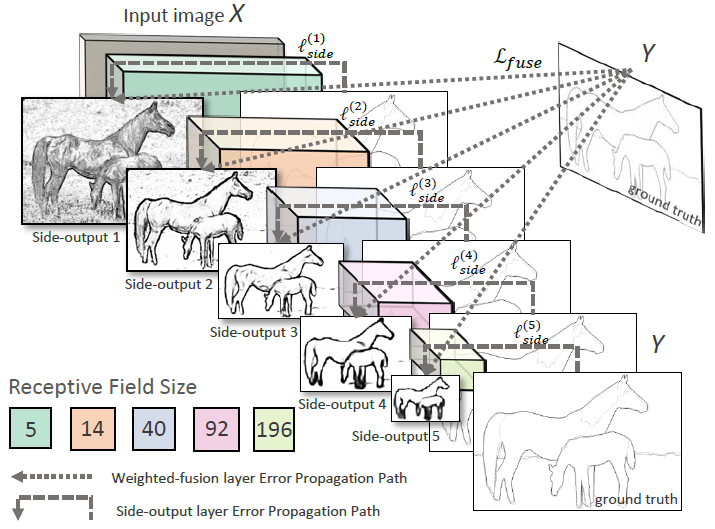

本文是由加州大学圣地亚哥分校的Saining Xie, Zhuowen Tu所作的Holistically-Nested Edge Detection
Abstract
我们开发了一种新的边缘检测算法，解决了这个长期存在的视觉问题中的两个重要问题:(1)整体形象训练与预测;(2)多尺度、多层次的特征学习。我们提出的方法，整体嵌套边缘检测(HED)，通过一个充分利用卷积神经网络和深度监督网络的深度学习模型，进行图像到图像的预测。HED自动学习丰富的层次表示(在侧面响应的深度监控指导下)，这对于解决边缘和对象边界检测中具有挑战性的模糊性非常重要。我们在这方面取得了长足的进步BSD500数据集(ODS F-score:782)和NYU深度数据集(ODS F-score:746)，并以改进的速度(每幅图像0:4秒)实现这一点，其速度比最近一些基于cnn的边缘检测算法快几个数量级。
Introduction
本文研究了自然图像中边缘和目标边界的检测问题。这个问题既基本又重视各种计算机视觉领域从传统的任务,诸如视觉特点,分割、目标检测、识别、跟踪和运动分析,医学成像,structurefrom——运动和3 d重建、现代应用程序像自动驾驶,移动计算,image-totext分析。长期以来，人们一直认为，在自然图像中精确定位边缘涉及到对各种变化的视觉感知.一项比较全面的数据收集和认知研究[28]表明，虽然不同的受试者对边界和边界的位置有不同的偏好，但是受试者之间仍然有令人印象深刻的一致性，例如一致性研究[28]达到F-score 0:80。
计算边缘检测的历史极为丰富;现在，我们重点介绍几部已被证明具有重大实际意义的代表性作品。人们可以将工作划分为几个组，如I:早期的开创性方法，如Sobel检测器[20]、归零[27,37]，以及被广泛采用的Canny检测器[4];方法由二驱动:信息论在特征之上，通过精心的手工设计，如统计得出边缘[22]，Pb [28]， gPb [1];第三:基于学习的方法，仍然依赖于人类设计的特征，如贝尔[5]，多尺度[30]，素描标记和结构边[6]。此外，最近出现了使用卷积神经的发展浪潮网络强调了自动分层特征学习的重要性，包括n4字段[10]、Deep-轮廓[34]，深度[2]，CSCNN[19]。在这种爆炸性的发展之前，在深度学习，结构化边缘法(通常缩写为SE)[6]是最著名的边缘检测系统之一，多亏了它在BSD500上最先进的性能并且它的实际有效速度是每秒2。5帧。近年来，基于cnn的方法[10,34,2,19]显示出良好的应用前景F-score性能优于SE。然而，这些方面仍有很大的改进空间基于cnn的方法，在F-score性能和速度-目前，作出预测的时间范围从几秒[10]到几小时(即使使用现代gpu)。
在此，我们开发了一个端到端的边缘检测系统，即整体嵌套边缘检测(HED)，该系统能够自动学习丰富的层次特征类型，如果我们想要接近人类解决自然图像边缘和对象边界检测中的模糊性的能力，这些特征是至关重要的。我们使用术语“整体”，因为HED虽然没有明确地对结构化输出进行建模，但它的目标是以图像到图像的方式训练和预测边缘。通过“嵌套”，我们强调了作为边输出而生成的继承的和逐步细化的边缘映射——我们打算显示沿着w的路径。这种层次特性的集成学习不同于以前的多尺度方法[40,41,30]，其中尺度空间边缘字段既不是自动学习的，也不是分层连接的。图1给出了一个示例图像和人类受试者地面真实注释的说明，以及所提出的HED边缘检测器(包括各个层的侧边响应)的结果，以及具有不同尺度参数的Canny边缘检测器[4]的结果。不同尺度的锐边不仅没有直接连接，而且相互之间也存在着一定的距离。
提出的整体嵌套边缘检测器(HED)解决了两个关键问题:(1)基于完全卷积神经网络的整体图像训练和预测[26]，用于图像到图像的分类(系统以图像为输入，直接生成边缘映射图像作为输出);(2)嵌套多尺度特征学习，受深度监督网[23]启发，进行深层监督，“指导”早期分类结果。我们发现这些基本技术的优点表现在它的准确性和计算性。
Holistically-Nested Edge Detection
在这一部分，我们详细描述了我们提出的边缘检测系统的配方。我们首先讨论相关的基于神经网络的方法，特别是那些强调多尺度和多层次特征学习的方法。边缘和目标边界检测的任务具有内在的挑战性。经过几十年的研究，已经出现了一些关键的特性，它们很可能在一个成功的系统中发挥作用:(1)精心设计和/或学特性[28,5],(2)多尺度响应融合(40,32岁,30),(3)接触不同层次的视觉感知(39,18,27,17)中层完形等[7]的信息,(4)将结构信息(内在相关性进行输入数据和输出解决方案)[6]和上下文(短期和长期)的相互作用[38],(5)进行整体图像预测(指全局直接获取图像内容进行预测的方法)[25]，(6)利用三维几何[15]，(7)寻址遮挡边界[16]。
结构化边缘(SE)[6]主要关注以下三个方面:使用大量手工设计的特性(特性1)、融合多尺度响应(特性2)、合并结构信息(属性4).最近一波使用CNN进行基于patch的边缘预测的工[10,34,2,19]包含了一个替代的公共线程，它关注三个方面:自动特征学习(property 1)、多尺度响应融合(property 2)，以及不同视觉感知水平的可能参与(性质3)。
然而，由于缺乏深度监督(我们的方法中也包括了深度监督)，[2,19]中隐藏层产生的多尺度响应语义意义更小，因为反馈必须通过中间层反向传播。更重要的是，它们的patch-to-pixel或patch-to-patch策略导致训练和预测效率显著下降。通过“整体嵌套”，我们打算强调我们正在生产一个端到端边缘检测系统，这一策略的灵感来自完全卷积神经网络在没有深度监管和侧方输出的情况下，全卷积网络(FCN)产生的效果不太理想(如图3所示)。F-score:745 on BSD500)高于HED，因为边缘检测需要高精度的边缘像素定位。值得一提的是我们的图像对图像的训练和预测策略.除了基于patch的CNN边缘检测方法的速度增益外，性能的提升主要来自三个方面:(1)
类似fcn的图像到图像的训练允许我们同时训练大量的样本(参见
表4);(2)模型中的深度监控引导我们学习更透明的特性(见表2);(3)在端到端学习中插入侧边输出，鼓励各层的相干贡献(见表3)。
Existing multiscale and multilevel NN
由于深度卷积神经网络的层次性，多尺度、多层次学习的概念可能因情况而异。例如，多尺度学习可以“在”神经网络中进行，以越来越大的接受域和向下采样(条纹)层的形式进行。在这种“内部”情况下，在每个层中学习的特性表示自然是多尺度的。另一方面，多尺度学习可以在神经网络的“外部”进行，例如通过“调整输入图像的尺度”。虽然这两个变体有一些显著的相似之处，但我们已经看到它们都应用于各种任务。
接下来，我们将多尺度深度学习的可能配置形式化为四类，即多流学习、跳网学习、运行在多个输入上的单个模型和独立网络的训练。图2给出了一个例子。考虑到这些可能性，将有助于更清楚地说明我们提出的整体嵌套网络方法与以前的工作的不同之处，并将有助于突出表示和效率方面的重要好处。
图2(A)给出了一个典型的多流学习体系结构[3,29]。注意，多个(并行)网络流具有不同的参数数和接受域大小，对应于多个尺度。同时将输入数据输入到多个流中，然后将各个流产生的串联特征响应输入到全局输出层中，从而产生最终的结果。
跳层网络学习:这种网络形式的例子包括[26,14,2,33,10]。关键的概念是“跳层”网络学习如图2(b)所示。skip-net体系结构的拓扑不是训练多个并行流，而是集中在一个主流上。添加链接以合并来自主网络流的不同级别的特性响应，然后将这些响应合并到共享输出层中。
上述两种设置的共同点是，在这两种架构中，只有一个输出损失函数，并且只生成一个预测。然而，在边缘检测中，获得多个预测来将边缘映射组合在一起通常是有利的(实际上也是普遍的)。
多输入单模型:为了获得多尺度预测，还可以对多个(缩放的)输入图像运行单个网络(或具有绑定权值的网络)，如图2(c)所示。这种策略可以发生在rain阶段(作为数据增强)和测试阶段(作为“集成测试”)。一个值得注意的例子是tiedweight金字塔网络[8]。这种方法在基于非深度学习的[6]方法中也很常见。需要注意的是，集成测试会降低学习系统的预测效率，尤其是使用更深层次的模型时[2,10]。
训练独立网络:作为图2(a)的一个极端变体，我们可以追求图2(d)，其中多尺度预测是通过训练多个不同深度、不同输出损失层的独立网络来实现的。由于这种重复会使培训所需的资源成倍增加，因此执行这项工作可能具有实际的挑战性。
整体嵌套网络:我们列出这些变体，以帮助澄清现有方法与我们提议的整体嵌套网络方法之间的区别，如图2(e)所示。现有方法在表示和计算复杂度方面常常存在显著的冗余。我们提出的整体嵌套网络是一个相对简单的变体，能够从多个尺度产生预测。体系结构可以解释为
图2(d)中的“独立网络”方法，激励了我们的选择。我们的体系结构包括一个具有多端输出的单流深网络。该体系结构类似于之前的一些工作，特别是深度监督的net[23]方法，在该方法中，作者证明了隐层监督可以提高图像分类任务的优化和泛化。如果需要统一的输出，多端输出还可以灵活地添加额外的融合层。
Formulation
在这里，我们制定了我们的边缘预测方法。训练阶段表示输入的训练数据集S = f (Xn;Yn);n = 1;:::;Ng，其中样本Xn = fx(n) j;j = 1;例如:;表示原始输入图像和Yn = fy(n) j;j = 1;例如:;jXnjg;y(n) j2 f0;1g表示图像Xn对应的地面真值二值边缘映射。为了简单起见，我们随后删除下标n，因为我们从整体和独立的角度考虑每个图像。我们的目标是建立一个能够学习特性的网络，从这些特性中可以生成接近群体的边缘映射。
Network Architecture
接下来，我们描述了HED的网络体系结构。
Trimmed network for edge detection
我们的框架的层次结构的选择值得深思。我们需要架构(1)是深入的，以便有效地生成感知多层次的特性;(2)具有不同步长下的多个阶段，从而捕捉边缘映射的固有尺度。我们还必须牢记，从零开始训练这种具有多个阶段的深度神经网络可能存在困难。最近，VGGNet[36]被认为在ImageNet挑战中实现了最先进的性能，具有很大的深度(16个卷积层)和很大的密度(stride-1 conv).对一般图像分类任务进行预处理的深度神经网络进行微调，对低层边缘检测任务有一定的帮助。因此，我们采用VGGNet架构，但做了如下修改:(a)在每个阶段，我们将侧边输出层分别连接到最后一个卷积层，分别为conv1 2, conv2 2, conv3 3, conv4 3, conv5 3。每个卷积层的接收域大小与对应的侧输出层相同;(b)切断VGGNet的最后一个阶段，包括第五池层和所有完全连接的层。“修整”VGGNet的原因有两方面。首先，因为我们期望有意义的侧边输出具有不同的规模，一个跨32层产生一个太小的输出平面的结果，插值预测图将太模糊，无法利用。第二，完全连接的层(即使将其重铸为卷积)需要大量的计算，因此从pool5上裁剪层可以显著降低训练和测试期间的内存/时间成本。我们最终的HED网络架构有5个阶段，分别是步骤1、2、4、8和16，并且具有不同的接受域大小，所有这些都嵌套在VGGNet中。看到表1总结了接受域和步长的配置。
Architecture alternatives
下面我们将讨论架构设计中一些可能的替代方案，特别是HED在边缘检测任务中的深度监控作用。采用了FCN和跳层结构的拓扑结构
FCN模型与我们的HED模型在几个方面有所不同。正如我们已经讨论过的，当FCN重新解释分类网络用于逐像素预测时，它只有一个输出损失函数。因此，在FCN中，虽然skip网络结构是一个DAG，它结合了粗糙的、高层的信息和精细的低层信息，但是它并没有显式地生成多尺度的输出预测。我们探讨了在与我们的HED模型相同的实验设置下，该架构如何用于边缘检测任务。我们首先尝试直接应用FCN-8s模型，用交叉熵损失代替损失函数进行边缘检测。表2的第一行显示的结果并不令人满意，这是可以预料的，因为这个架构仍然不够好。我们将进一步探讨是否可以通过添加来自底层的更多链接来提高性能。然后，我们创建一个FCN-2s网络，它从pool1和pool2层添加额外的链接。然而，直接应用FCN跳网拓扑仍然落后于我们提出的HED体系结构(见表2第二行)。做了大量的调整的FCN，在边缘检测方面有可能实现竞争性能，但是HED中的多尺度边输出被认为是边缘检测的自然和直观的。
深监督的角色因为我们将加权融合每个side-output层输出层连接,需要证明采用深监管条件(具体地说,一边(W; W (m)):现在整个网络是道路连通和输出层参数可以通过反向传播更新加权融合层误差传播路径(主题在这里，我们证明了深度监督对于获得所需的边缘映射是很重要的。我们提出的网络的关键特征是，每个网络层都应该扮演一个单例网络的角色，负责生成一定规模的边缘映射。基于上面讨论的两种变体，本文给出了一些定性的结果:(1)同时进行加权融合监督和深度监督的训练，(2)只进行加权融合监督的训练。
我们观察到，在深度监控下，嵌套的边输出是自然和直观的，只要连续的边缘映射预测是逐步从粗到细、从局部到全局的。另一方面，只考虑加权融合输出损耗的训练给出的边缘预测缺乏这种可分辨的顺序:在较高的层侧输出中缺少许多临界边缘;在完全相同的实验设置下，基准数据集(表2第三行)上的结果在F-score上差别不大，但平均精度严重退化;由于没有跨多个尺度的直接控制和引导，该网络严重偏向于学习大型结构边缘。
Conclusion
在本文中，我们开发了一种新的基于卷积神经网络的边缘检测系统，该系统以实际相关的速度(例如，使用0:4秒)在自然图像上展示了最先进的性能GPU和12秒使用CPU)。我们的算法基于全卷积神经网络和深度监督网络的思想。我们还通过采用预先训练的修剪过的VGGNet来初始化网络结构和参数。我们的方法结合了多尺度和多层次的视觉反应，在图像到图像的学习中显示出了很好的效果，尽管还没有实施显式的上下文和高级信息。
收获
本文主要解决两个问题：
- 基于整个图像的训练和预测。
- 多尺度和多水平的特征学习。
该算法通过深度学习模型，完成了从图像到图像的预测（意思是最终结果输出的是一幅图像），并通过学习到的丰富的分级特征（通过多尺度），完成边缘检测中的细节问题。

作者在conv1, conv2,conv3, conv4,conv5后面分别引出侧输出(side-output 层)，使得结果向着边缘检测方向进行。同时随着side-output层越向后变得越小，将receptive field变大，然后接入sigmoid_cross_entropy_loss，并且在最后一层，对上面的5层的输出做了concat(weighted-fusion layer)，同时也接入sigmoid_cross_entropy_loss，这样所有的Loss都等概率的同时训练，从而使得最终得到比较好的模型。